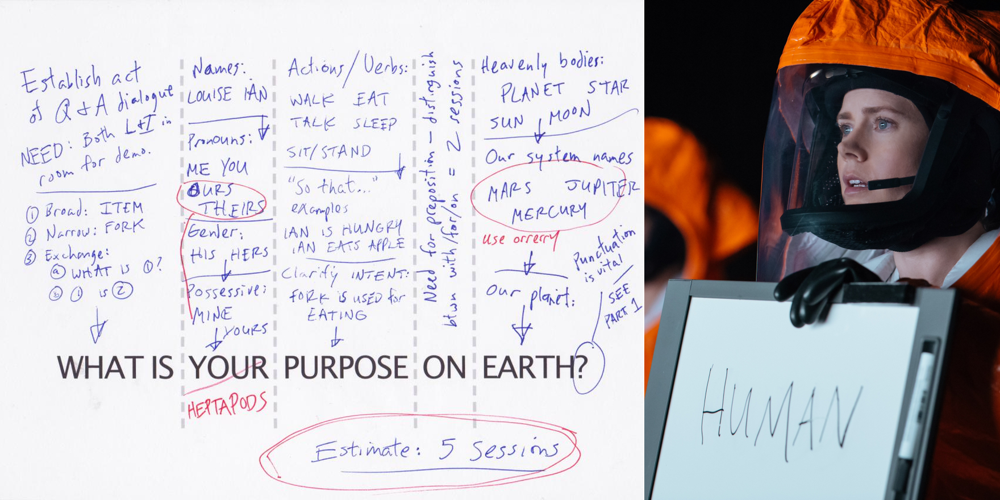

Arpan suggested that I review Arrival, a SciFi movie that has as its lead character—wait for it—a linguistics professor. I first thought of writing a review without spoilers but realized that it’d be impossible to write about the linguistically relevant parts of the movie without giving it all away, so I scrapped that plan. This review specifically addresses only and all linguistic aspects of the movie, so it might feel like nitpicking if you are not interested in all that stuff.
(Read on if you don’t mind spoilers)
Dr Banks’ Background
I read a couple of comments online that were displeased with how the movie introduced the character arc for Dr Banks. I was kinda okay with it, but for the sake of completeness, let’s talk about it anyway. The whole ‘Farsi translation’ thing was a little iffy if you tried to look too deep into it. There is no reason why the military would recruit a random linguistics professor for translating Farsi, when they are likely to have several such translators on payroll anyway. And it wasn’t like they needed some classical or ‘ancient’ version of the language translated where a linguistics professor is more likely to have specific expertise.
Likewise, they added a bit about Dr Banks asking the military guy to quiz the second-prospect linguist about the Sanskrit word for war. She was referring to a Sanskrit word (gavishti) which roughly translates to the desire for cows, but it doesn’t seem that it’s the primary Sanskrit word for war / battle (which is typically yuddh). It’s not clear why anyone would answer gavishti if asked the Sanskrit word for war just because it exists, so this attempt to establish the expertise of her character and to touch on the whole ‘mistranslations are common and problematic’ theme wasn’t very convincing.
Deciphering Alienese
In what felt like an unintentionally funny intro scene for this movie’s linguistic adventure, the military colonel whips out a dictaphone-like device and plays out the aliens’ responses to humans saying ‘Hello’ and ‘Why are you here?’, asking Dr Banks to translate them. Like the good field linguist she apparently is, she says this was way too little data and she needs to go talk to the aliens face to face if they wished to get any success figuring out what they are saying. And so begins our quest.
When she decides to use written communication with the aliens and does the whole spiel with writing her name, pointing to herself etc., they respond with two symbols in a circular Rorschach-inkblot-esque script.

In an exposition scene that follows, she explains how all scripts on Earth have a sound to character correspondence, while the Alien script isn’t phonetic—rather, it represents concepts and their spatial-temporal relationships through various parts of that inkblot.
This felt like a major lapse of research on part of the filmmakers. You don’t have to go in search of esoteric languages to find one that doesn’t use a phonetic writing system. You have Chinese. Chinese characters are not phonetic, and while there is some aspect of sound-character correspondence there, they largely represent concepts instead of sounds, and I would expect any linguist to know this, especially Dr Banks, whose being (at least) conversational in Mandarin is a key plot point.
I think the whole process of figuring out the heptapod language was reasonably well done. Dr Banks overall plan made sense, but they didn’t show the execution in any sort of detail (perhaps it would have been too boring). So when you watch her being able to communicate reasonably well with the aliens using an iPad app in just a few minutes of movie time, it does feel a little rushed. Deciphering what the splotches meant, and how various parts worked should ideally have been the toughest part of the challenge because they had little to no data in the beginning, but they more or less bypassed it.
It’s often not immediately obvious to lay people what the amount or nature of ‘semantic content’ in any linguistic utterance is, as shown by the behavior of the top brass. They largely cared only about finding out the aliens’ purpose on Earth, and had little if any patience for the nitty-gritties of linguistic analysis. I liked how she used the “What is your purpose on Earth” question to give a quick tutorial in how she’d need to build up the semantics of each of the entities in that sentence.

One thing that they didn’t quite give a reasonable explanation of was why she decided to use written language for communicating instead of trying to understand their speech. There’s also the more fundamental question of why the heptapods could not communicate to us in a human language. You can hand-wave it by saying it was essential for them to teach Dr Banks their language (for all the so-called cognitive effects it had) but I don’t find that very convincing.
Use Weapon
This part honestly felt a bit contrived to me. I get that they wanted to tie it in with the whole ‘the same word can have different senses and interpretations’ thing and how the exact context is necessary to make sense of language, but the conflict between the various nations felt a little unrealistic.
Sapir Whorf on Steroids
I have discussed the S-W hypothesis in my book review of Guy Deutscher’s book Through the language glass, but in short, there are a couple of versions of the idea. The strong form insists that a person’s thought and cognition is strongly constrained by the language they speak. The weak form claims that the language you speak somewhat affects or shapes your thought process.
Arrival uses a form of the Sapir Whorf hypothesis that is not just strong, it’s weapons-grade. Giving not so much a nod as a big giant neon sign pointing towards the S-W hypothesis, they show that as Dr Banks becomes more and more proficient in the heptapod language, it starts drastically affecting her perception of space and time, and eventually trains her mind to see time as some kind of endless continuum. Translated to English, she can essentially communicate with the future, because the future is no longer ‘out there in the future’—it’s basically part of the same fabric of time or whatever1.
The strong form of the S-W hypothesis has already been thoroughly dismantled and debunked, so it goes without saying that Arrival’s rendition of it exceeds far beyond the realm of what could be considered realistic. I found a great analogy in a reddit discussion that said that Sapir Whorf in linguistics is kinda like faster than light travel in physics. You know that it is not going to work in a ‘grounded in reality’ kind of way, but the possibilities to speculate about it are endless and very exciting.
I get that it’s sci-fi and that’s fine, but Dr Banks can literally perceive the future, and handling such causality-breaking plot devices in your story is not easy. The scriptwriters here basically chickened out of that responsibility by just not dealing with it when inconvenient.
Even if you are willing to accept this premise, my biggest gripe is that Dr Banks never actually learns to speak their language! She basically understands the writing system enough to be able to help code up the app to translate what she wants to say in English into their language, but even in the world of S-W on steroids, you’d expect that you at least need to speak a language to get its cognitive benefits.
All in all, I was reasonably entertained by this movie, including all the linguistic bits, and it was nice that there were no outright ridiculous claims about language. It’s also a slightly less conventional take on the aliens-visiting-earth storyline. Not a bad idea to check it out if you think you’ll enjoy something of this nature.
- I am reminded of these lines from Kanye West’s song Monster: “I’m living in the future so the present is my past… My presence is a present, kiss my ass.” [return]